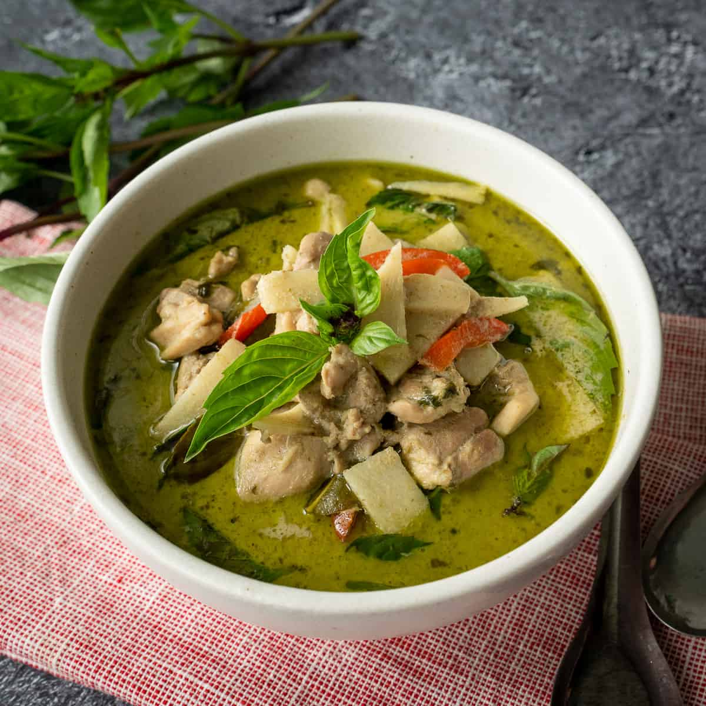

Thai Green Curry

Description
This fragrant and creamy Thai green chicken curry is easy to make. The
most work that you'll have to put into this dish is finding where your
local supermarket hides the coconut milk.
I prefer the Blue Dragon green curry paste but you can use any store brand
green curry paste.
Ingredients
- 225g new potatoes, cut into chunks
- 100g green beans, trimmed and halved
- 1 tbsp vegetable or sunflower oil
- 1 garlic clove, chopped
-
1 rounded tbsp or 4 tsp Thai green curry paste (you can't fit the
tablespoon into some of the jars)
- 400ml can coconut milk
- 2 tsp Thai fish sauce
- 1 tsp caster sugar
-
450g boneless skinless chicken (breasts or thighs), cut into bite-size
pieces
-
2 lime leaves finely shredded, or 3 wide strips lime zest, plus extra to
garnish
- good handful of basil leaves
- boiled rice, to serve
Steps
-
Put 225g new potatoes, cut into chunks, in a pan of boiling water and
cook for 5 minutes.
-
Add 100g trimmed and halved green beans and cook for a further 3
minutes, by which time both should be just tender but not too soft.
Drain and put to one side.
-
In a wok or large frying pan, heat 1 tbsp vegetable or sunflower oil
until very hot, then drop in 1 chopped garlic clove and cook until
golden, this should take only a few seconds. Don’t let it go very dark
or it will spoil the taste.
-
Spoon in 1 rounded tbsp Thai green curry paste and stir it around for a
few seconds to begin to cook the spices and release all the flavours.
-
Next, pour in a 400ml can of coconut milk and let it come to a bubble.
-
Stir in 2 tsp Thai fish sauce and 1 tsp caster sugar, then 450g
bite-size chicken pieces. Turn the heat down to a simmer and cook,
covered, for about 8 minutes until the chicken is cooked.
-
Tip in the potatoes and beans and let them warm through in the hot
coconut milk, then add 2 finely shredded lime leaves (or 3 wide strips
lime zest).
-
Add a good handful basil leaves, but only leave them briefly on the heat
or they will quickly lose their brightness.
-
Scatter with lime to garnish and serve immediately with boiled rice.